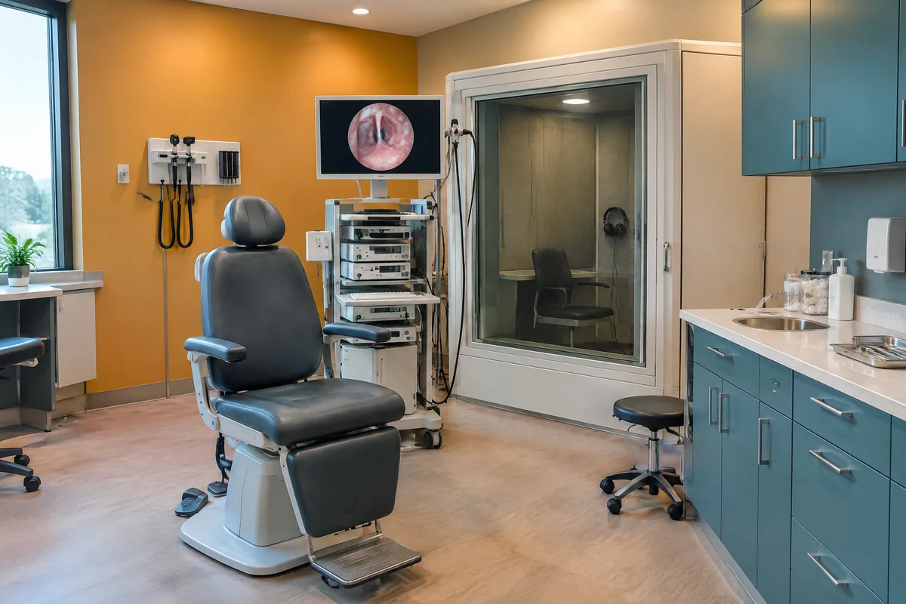

کمشنوایی
شنواییسنجی کامل و در صورت نیاز تجویز سمعک.
درمان سینوزیت، کمشنوایی، خروپف و مشکلات گلو؛ شنواییسنجی و آندوسکوپی بینی در خود مطب انجام میشود.

دکتر حمید طاهری جراح گوش، حلق و بینی است و درمان را از سادهترین روش شروع میکند. شنواییسنجی و آندوسکوپی در خود مطب انجام میشود تا در همان جلسهی اول علت مشکل مشخص شود.
شنواییسنجی کامل و در صورت نیاز تجویز سمعک.
پیدا کردن علت و راههای کم کردن صدای وزوز.
درمان دارویی و پیگیری عفونتهای مکرر.
پیدا کردن علت، از ریفلاکس معده تا عفونتهای پشت سر هم.
بررسی اینکه لوزه باید برداشته شود یا نه.
معاینهی تارهای صوتی با آندوسکوپ.
درمان با دارو و در صورت نیاز جراحی بستهی سینوس.
جراحی سپتوپلاستی برای نفس کشیدن راحتتر.
پیدا کردن علت خروپف و درمان مناسب.
روز و ساعت را انتخاب کنید؛ پیامک تأیید برایتان ارسال میشود.
روز
ساعت
ابتدا یک روز را انتخاب کنید.
حدود ۲۰ دقیقه، در اتاق مخصوص و بدون درد.
خیر. بیشتر موارد با دارو و شستوشوی بینی بهتر میشوند.
بله، بهخصوص برای لوزه، آدنوئید و عفونتهای گوش.
اول بینی و حلق معاینه میشود؛ اگر لازم باشد، برای تست خواب معرفی میشوید.